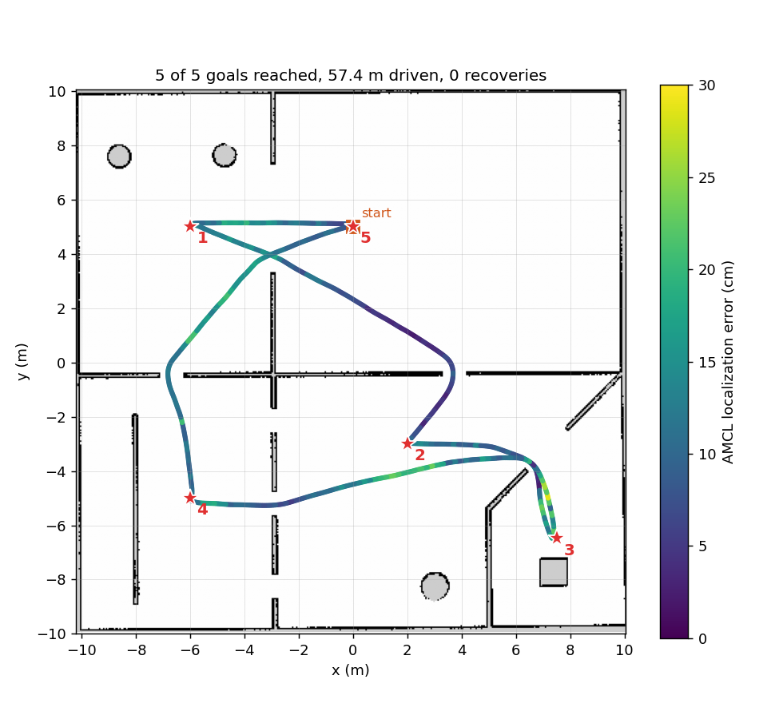
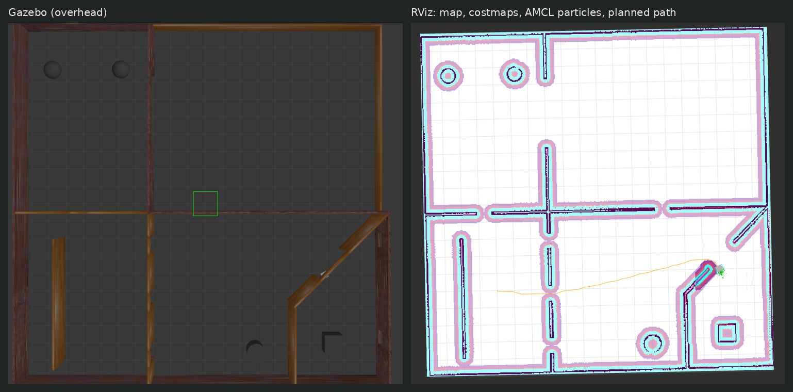
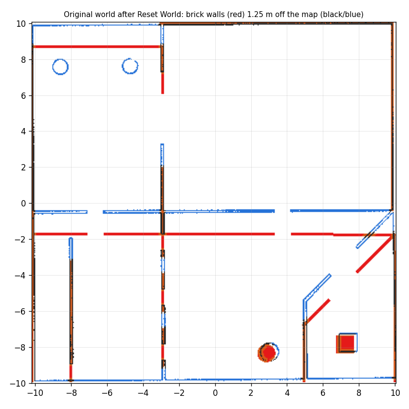
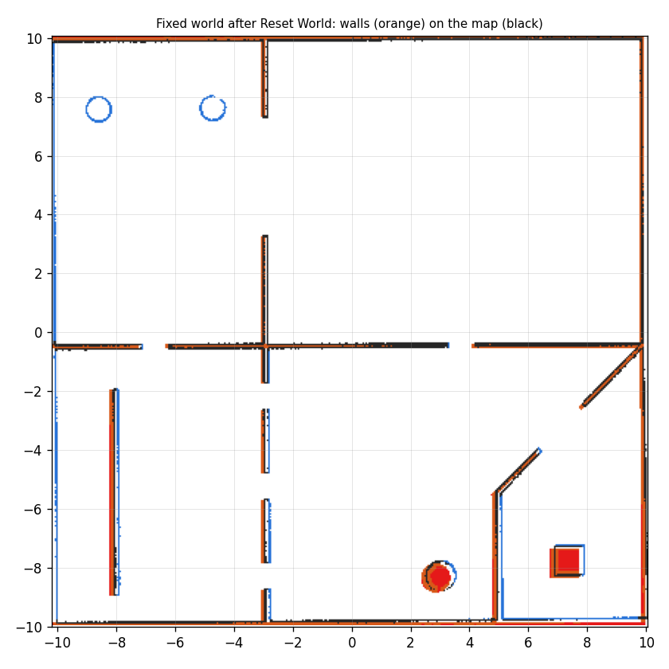

The Testbed-T1.0.0 robot now drives itself around the simulated building. Every Nav2 server is launched by hand from the new testbed_navigation package, without nav2_bringup, after 13 deliberate bugs in the starter code were found and fixed.
Click a bug to see its root cause and how the fix was verified. The colour on the left edge shows its impact: red stopped the project from running, amber would have broken localization or navigation, grey was cleanup.
All surfaces use μ = 0.2 and the casters slide rather than roll, which looked like it would cause slip. The drive test showed none: 1.00 m commanded, 1.00 m driven, forwards and backwards.
The wheel mesh spans z = 0.0 to 0.1 m, matching the plugin.
The lidar sits at z = 0.228 m, above the body top at 0.2225 m, so it never sees the robot itself.
testbed.trans is unused in ROS 2 but harmless, so it was left in place.
Problems hit while building testbed_navigation, newest first, with how each was solved.
A goal clicked in RViz goes to bt_navigator, which runs Nav2's behaviour tree: it asks the planner for a path, has the controller follow it, replans once a second, and calls recovery behaviours if the robot gets stuck. AMCL keeps the robot located on the map by matching lidar scans to it.
base_footprint now sits at the wheel-axle midpoint (bug 12), so every Nav2 server and AMCL track the robot's true rotation centre.
| Server | Plugin | Why |
|---|---|---|
map_server | nav2_map_server | Serves the provided 405 × 400 map at 0.05 m per cell |
amcl | DifferentialMotionModel, likelihood field | Two-wheel robot; fast, robust scan matching against the map |
planner_server | NavFn, Dijkstra | Reliable on a static map. A* mode failed on long routes and was dropped |
controller_server | Regulated Pure Pursuit | Smooth for a differential drive, few parameters; slows near walls and the goal |
bt_navigator | Default replanning + recovery tree | Replans at 1 Hz; clears costmaps, spins, waits or backs up on failure |
behavior_server | Spin, BackUp, Wait | Exactly the recoveries the default tree calls |
velocity_smoother | nav2_velocity_smoother | Limits speed and acceleration before commands reach the wheels |
On a five-goal tour through every part of the building, including the 0.9 m gaps and the enclosed corner, the robot reached all five goals with no recoveries. The tour was repeated with the lifecycle managers starting every node on their own, with the same result.
| Goal (x, y) | Result | Time | Driven | Recoveries | Final error | Worst AMCL error |
|---|---|---|---|---|---|---|
| (−6.0, 5.0) | Reached | 31.9 s | 5.96 m | 0 | 0.088 m | 0.196 m |
| (2.0, −3.0) | Reached | 56.5 s | 14.37 m | 0 | 0.022 m | 0.179 m |
| (7.5, −6.5) | Reached | 28.5 s | 7.59 m | 0 | 0.157 m | 0.233 m |
| (−6.0, −5.0) | Reached | 60.5 s | 15.80 m | 0 | 0.084 m | 0.287 m |
| (0.0, 5.0) | Reached | 50.0 s | 13.71 m | 0 | 0.164 m | 0.213 m |
Final error includes the 0.15 m goal tolerance. Localization error is exact here: /odom is the true pose in this simulation and the map frame equals the world frame, so AMCL's map → odom transform is its error.

The same 71-second run from both windows: the robot leaves the enclosed corner, passes a 0.9 m gap to (−6, −5) and returns to the start. 2 of 2 goals, 0 recoveries.



Then click Nav2 Goal in RViz and a point on the map. Each layer can also be started on its own: map_loader.launch.py, localization.launch.py, navigation.launch.py.
Nav2 1.1.20's lifecycle manager needs libdiagnostic_updater.so, which ros-humble-diagnostic-updater 4.0.6 lacks. If the lifecycle managers exit with code 127, run sudo apt install --only-upgrade ros-humble-diagnostic-updater.
| Command | What it measures |
|---|---|
ros2 run testbed_navigation drive_test.py | Commanded vs actual motion: slip, turning rate, rotation centre |
ros2 run testbed_navigation localization_test.py | AMCL error after each step of a route of spins and straights |
ros2 run testbed_navigation navigation_test.py | Sends goals; reports result, time, distance, recoveries and errors |
ros2 run testbed_navigation plot_route.py | Draws a recorded route on the map, coloured by localization error |